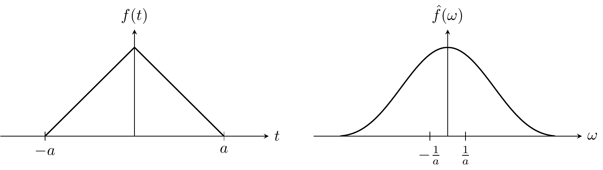
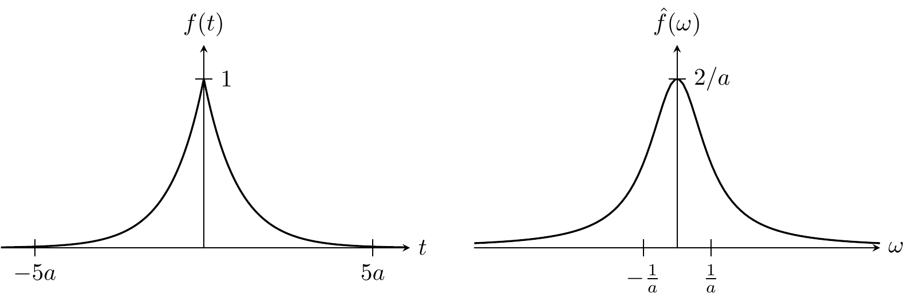

푸리에 변환
1 수학적 기반
1.1 \(L^p\) 공간 과 \(L^1\) 공간에서의 푸리에 변환
행렬과 벡터의 노름에서처럼 \(p=1,\,2,\infty\) 일 때 가장 중요하다. 또한 \(L^p\) 노름이 정의되는 함수의 집합은 벡터공간이다. \(p=1\) 일 때 \(L^1\) 노름이 정의되는 함수들을 Lebesgue 적분 가능 함수 라고 한다. 이제 \(f\in L^1(\mathbb{R})\) 이라고 하자. \(e^{-i\omega t}\) 는 유계인 연속 함수이므로 \(e^{-i \omega t}f(t)\) 는 모든 \(\omega \in \mathbb{R}\) 에서 국소적으로 적분 가능한 함수(locally integrable function) 이다. 이 경우 아래와 같이 \(L^1\) 공간에서의 푸리에 변환을 정의 할 수 있다. \(L^\infty(\mathbb{R})\) 는 measure zero 인 집합을 제외하면 유계인 함수의 집합이다.
원래 함수 \(f(t)\) 는 실함수이더라도 \(\hat{f}(\omega)\) 는 실변수 \(\omega\) 에 대한 복소함수이다. 복소수를 극좌표계에서 \(x+iy=re^{i\theta}\), \(r=\sqrt{x^2+y^2}\), \(\theta = \arctan(y/x)\) 로 표현하는 것처럼 \(R(\omega) = \text{Re}[\hat{f}(\omega)]\) ,\(X(\omega)= \text{Im}[\hat{f}(\omega)]\) 에 대해
\[ \hat{f}(\omega)= R(\omega)+ iX(\omega)= A(\omega) e^{i\theta(\omega)} \]
로 표현할 수 있으며 이 때 \(A(\omega)=\left|\hat{f}(\omega)\right|\) 를 amplitude spectrum, \(\theta(\omega)\) 을 phase spectrum 이라고 한다.
예제 1 (가우시안 함수의 푸리에 변환) 가우시안 함수 \(f(t) = e^{-t^2/2\sigma^2}\) 에 대한 푸리에 변환 역시 가우시안이다.
\[ \begin{aligned} \hat{f}(\omega) = \int_{-\infty}^\infty e^{-(i\omega t + t^2/2\sigma^2)}\,dt = \int_{-\infty}^\infty \exp\left(-\dfrac{1}{2\sigma^2}(t+i\sigma^2\omega)^2-\dfrac{\omega^2\sigma^2}{2}\right) = \sqrt{2\pi}\sigma e^{-\sigma^2 \omega^2/2} \end{aligned} \]
푸리에 변환에 의해 원래 함수의 표준편차 \(\sigma\) 가 \(1/\sigma\) 로 변화한다.
예제 2 (직사각 함수의 푸리에 변환) \[ f(t) = \left\{\begin{array}{ll} 1, \qquad & |t|< a \\ 0&\text{otherwise}\end{array}\right. . \]
의 푸리에 변환은 다음과 같다.
\[ \begin{aligned} \hat{f}(\omega) = \int_{-a}^a e^{-i\omega t}\, dt= \left(\dfrac{2}{\omega}\right) \sin (a\omega) = 2a\, \text{sinc} (a\omega) \end{aligned} \]
이 때 \(\textrm{sinc}(x) := \dfrac{\sin x}{x}\) 로 정의되는 함수이다. 기본적인 신호 를 참고하라. 실제로 \(\operatorname{sinc}\) 는 \(L^1(\mathbb{R})\) 함수가 아니다. 즉 \(f\in L^1(\mathbb{R})\) 이더라도 \(\hat{f}\not\in L^1(\mathbb{R})\) 일 수 있다.
예제 3 기본적인 신호 함수들 의 Heaviside 계단함수 \(\text{step}(x)\) 가 사용된 아래와 같은 함수를 생각하자.
\[ f(t) = \left(1-\dfrac{|t|}{a}\right) \text{step}\left( 1-\dfrac{|t|}{a}\right) \]
이 함수의 푸리에 변환은 다음과 같다.
\[ \hat{f}(\omega)= a \cdot \dfrac{\sin^2 \left(\dfrac{a\omega}{2}\right)}{\left(\dfrac{a\omega}{2}\right)^2} \]

예제 4 \(f(t) = e^{-a|t|},\, (a>0)\) 의 푸리에 변환은 다음과 같다.
\[ \begin{aligned} \hat{f}(\omega) = \mathfrak{F}\left[ e^{-a|t|} \right] &= \int_{-\infty}^0 e^{(a-i\omega)t}\, dt + \int_0^\infty e^{-(a+i\omega)t}\, dt = \dfrac{2a}{\omega^2+a^2} \end{aligned} \]

1.2 푸리에 변환의 수학적 성질
다음은 푸리에 변환의 정의에 의헤 쉽게 증명 할 수 있다.
명제 1 (푸리에 변환의 수학적 성질) \(f(t),\,g(t)\in L^1(\mathbb{R})\), \(a,\,b\in \mathbb{C}\) 이고 \(\hat{f}(\omega) = \mathfrak{F}[f(t)]\), \(\hat{g}(t) = \mathfrak{F}[g(t)]\) 일 때 다음이 성립한다.
(\(1\)) (Linearity) \(\mathfrak{F}[af(t)+bg(t)] = a \mathfrak{F}[f(t)] + b\mathfrak{F}[g(t)]\).
(\(2\)) (Shifting) \(\mathfrak{F}[f(t-a)] = e^{-ia\omega}\hat{f}(\omega)\).
(\(3\)) (Scaling) \(\mathfrak{F}[f(at)] = \dfrac{1}{a}\hat{f}\left(\dfrac{\omega}{a}\right)\).
(\(4\)) (Conjugation) \(\mathfrak{F}[\overline{f(t)}] = \hat{f}(-\omega)\).
(\(5\)) (Modulation) \(\mathfrak{F}[e^{ibt}f(t)] = \hat{f}(\omega - b)\).
(\(6\)) (Continuity) \(\hat{f}(\omega)\) 는 연속이다.
(\(7\)) (Differentiation) \(\dfrac{d^n \hat{f}(\omega)}{d\omega^n} = (-i)^n \mathfrak{F}\left[t^n f(t)\right]\)
(증명). (\(7\)) 만 수학적 귀납법으로 증명한다. 우선 \(n=1\) 경우.
\[ \begin{aligned} \dfrac{d\hat{f}}{d\omega} &= \lim_{h \to 0}\dfrac{\hat{f}(\omega + h) - \hat{f}(\omega)}{h} = \lim_{h \to 0} \int_{-\infty}^\infty f(t) e^{-i\omega t}\left(\dfrac{e^{-iht}-1}{h}\right)\, dt \\ &= \int_{-\infty}^\infty (-it)f(t)e{-i\omega t}\, dt = -i \mathfrak{F}[tf(t)]. \end{aligned} \]
이제 \(n\) 에 대해 성립함을 가정하자.
\[ \begin{aligned} \dfrac{d^{n+1}\hat{f}}{d\omega^{n+1}}&= \dfrac{d}{d\omega}\left((-i)^n\mathfrak{F}[t^nf(t)]\right) = (-i)^n \dfrac{d}{d\omega}\mathfrak{F}[t^n f(t)] = (-i)^{n+1}\mathfrak{F}[t^{n+1}f(t)] \end{aligned} \]
이다. \(\square\)
정리 1 (리만-르벡 따름정리) \(f\in L^1(\mathbb{R})\) 일 때
\[ \lim_{|\omega|\to \infty} \left|\hat{f}(\omega)\right| = 0 \]
이다.
(증명). \(e^{-i\omega t} = - e^{-i\omega (t+\pi/\omega)}\) 를 이용하면,
\[ \begin{aligned} \hat{f}(\omega) & = - \int_{-\infty}^\infty e^{-i\omega (t+\pi/\omega)} f(t) = - \int_{-\infty}^\infty e^{-i \omega x} f\left(x-\dfrac{\pi}{\omega}\right)\, dx \\ \end{aligned} \]
이다. 따라서,
\[ \begin{aligned} \hat{f}(\omega) &= \dfrac{1}{2}\left[\int_{-\infty}^\infty e^{-i\omega t} f(t) \, dt - \int_{-\infty}^\infty e^{-i\omega t} f\left(t- \dfrac{\pi}{\omega}\right)\, dt\right] \\[0.5em] &= \dfrac{1}{2} \int_{-\infty}^\infty e^{-i\omega t}\left[f(t) - f\left(t-\dfrac{\pi}{\omega}\right)\right]\, dt \\[0.5em] \end{aligned} \]
이다. 이로부터
\[ \lim_{|\omega|\to \infty} \left|\hat{f}(\omega) \right| \le \lim_{|\omega|\to 0}\dfrac{1}{2} \int_{-\infty}^\infty \left| f(t) - f\left (t-\dfrac{\pi}{\omega}\right)\right|\, dt = 0 \]
임을 안다. \(\square\)
\(C_0 (\mathbb{R})\) 은 \(f:\mathbb{R}\to \mathbb{C}\) 함수 가운데 모든 \(\mathbb{R}\) 에서 연속이며 \(\displaystyle \lim_{|t|\to \infty} f(t) = 0\) 인 함수의 집합이다. \(C_0 (\mathbb{R})\) 에 대해 노름을
\[ \|f\| := \sup_{t\in \mathbb{R}} |f(t)| \]
로 정의 할 수 있으며, 따라서 \(C_0 (\mathbb{R})\) 은 노름 공간이다. 정리 1 로부터 푸리에 변환은 \(L^1(\mathbb{R})\) 에서 \(C_0(\mathbb{R})\) 로의 선형 변환이라는 것을 알 수 있다.
정리 2 (\(n\) 계 도함수의 푸리에 변환) \(f(t)\) 가 \(C^1(\mathbb{R})\) 함수이고 \(\displaystyle \lim_{|t|\to\infty} f(t) = 0\) 이며 \(f,\,f'\in L^1(\mathbb{R})\) 이면
\[ \mathfrak{F}[f'(t)] = (i\omega) \mathfrak{F}[f(t)] \tag{2}\]
이 성립한다. 또한 \(f\in C^n(\mathbb{R})\) 이며 \(f,\,f',\ldots,\,f^{(n)}\in L^1(\mathbb{R})\) 이고 \(k=1,\ldots,\,n-1\) 에 대해 \(\displaystyle \lim_{|t|\to \infty} f^{(k)}(t) = 0\) 이라면 다음이 성립한다.
\[ \mathfrak{F}\left[f^{(n)}(t)\right] = (i\omega)^n \mathfrak{F}[f(t)]. \tag{3}\]
(증명). 푸리에 변환의 정의로부터
\[ \mathfrak{F}[f'(t)] = \int_{-\infty}^\infty e^{-i\omega t}f'(t)\, dt = \left[e^{-i\omega t} f(t)\right]_{-\infty}^{\infty} +i\omega \int_{\infty}^\infty e^{i\omega t}f(t)\, dt = (i\omega)\mathfrak{F}[f(t)] \]
이다. \(1,\,2,\ldots,\,(n-1)\)-계 도함수에 대해 식 3 이 성립한다고 가정하면
\[ \begin{aligned} \mathfrak{F}[f^{(n)}(t)] &=(i\omega)\mathfrak{F}[f^{(n-1)}(t)] = (i\omega)^n \mathfrak{F}[f(t)] \end{aligned} \]
이다. \(\square\)
곡선의 매끄러운 정도(smoothness) 는 그 곡선이 어떤 \(C^n\) 급 함수인지를 의미한다. 만약 \(f^{(n)}\in L^1(\mathbb{R})\) 이며 \(\displaystyle \lim_{|t|\to\infty}f^{(n)}(t)=0\) 이라면 리만 르벡 정리 에 따라 \(\displaystyle \lim_{|\omega|\to\infty} (i\omega)^n \mathfrak{F}[f(t)]=0\) 이다. 즉 \(f\) 가 더 매끄러울 수록, 즉 \(f\in C^n\) 에서 \(n\) 값이 클 수록 \(\mathfrak{F}[f(t)]\) 는 \(|\omega| \to \infty\) 극한에서 더 빨리 \(0\) 으로 수렴한다. 뒤에 나오겠지만 그 역도 마찬가지이다. \(f\in C^n(\mathbb{R})\) 은 함수의 전역적 성질이며 \(\displaystyle \lim_{|\omega|\to\infty}\mathfrak{F}[f(t)] = 0\) 은 국소적 성질이다. 함수의 전역적 성질이 그 푸리에 변환의 국소적 성질을 규정한다.
2 합성곱과 푸리에 변환
명제 2 정의 3 에서의 \((f\ast g)\in L^1(\mathbb{R})\) 이다.
(증명). \[ \int_{-\infty}^\infty \int_{-\infty}^\infty |f(t-\tau)\, g(\tau)| \, d\tau\, dt = \int_{-\infty}^\infty g(\tau)\,d\tau\, \int_{-\infty}^\infty |f(t)|\,dt = \|g\|_1 \|f\|_1. \qquad \square \]
명제 3 \(f,\,g,\,h \in L^1(\mathbb{R})\) 에 대해 다음이 성립한다.
(\(1\)) \(f \ast g= g \ast f\).
(\(2\)) \(f\ast (g \ast h)= (f \ast g)\ast h\).
(\(3\)) \(f \ast (g + h) = f\ast g + f \ast h\).
(증명). (\(1\)) \(\displaystyle (f\ast g)(t) = \int_{-\infty}^\infty f(t-\tau)g(\tau) \, d\tau \stackrel{s=t-\tau}{=} \int_{-\infty}^\infty f(s)\, g(t-s)\, ds = (g\ast f)(t).\)
(\(2\))
\[ \begin{aligned} \left[f\ast (g \ast h)\right](t)&= \int_{-\infty}^\infty f(t-\tau) \left[\int_{-\infty}^{\infty} g(\tau - s)\, h (s)\, ds\right]\, d\tau \\ &=\int_{-\infty}^\infty \left[\int_{-\infty}^\infty f(t-\tau) \,g(\tau-s) \, d\tau \right] h(s)\, ds \\ &\stackrel{x=\tau-s}{=} \int_{-\infty}^\infty \left[\int_{-\infty}^\infty f((t-s)-x))\, g(x)\, dx\right] h(s)\, ds\\ &= \int_{-\infty}^\infty (f \ast g)(t-s)\, h(s)\,ds \\ &= (f \ast g)\ast h (t). \end{aligned} \]
(\(3\)) trivial. \(\square\)
아래의 두 명제는 증명 없이 받아들인다.
명제 4 \(f\in L^1(\mathbb{R})\) 이고 \(g\in L^\infty(\mathbb{R})\) 이면 \(f\ast g\) 는 \(\mathbb{R}\) 에서 연속이다.
명제 5 양수 \(p,\,q,\,s\) 가 \(\dfrac{1}{s} = \dfrac{1}{p} + \dfrac{1}{q} -1\) 일 때 다음이 성립한다.
\[ \|f\ast g\|_s \le \|f\|_p \|g\|_q \]
정리 3 (Convolution theorem) \(f,\,g\in L^1(\mathbb{R})\) 일 때 다음이 성립한다.
\[ \mathfrak{F}[(f \ast g)(t)] = \mathfrak{F}[f(t)]\mathfrak{F}[g(t)]. \]
(증명). \[ \begin{aligned} \mathfrak{F}[(f \ast g)(t)] &= \int_{-\infty}^\infty e^{-i \omega t} \int_{-\infty}^\infty f(t-\tau)\, g(\tau)\, d\tau\, dt \\ &= \int_{-\infty}^\infty\left[ \int_{-\infty}^\infty e^{-i\omega (t-\tau)} f(t-\tau) \, dt\right] e^{-i \omega \tau}g(\tau)\, d\tau \\ &= \int_{-\infty}^\infty \mathfrak{F}[f(t)] \, e^{-i \omega \tau} g(\tau)\, d\tau\\ &= \mathfrak{F}[f(t)]\mathfrak{F}[g(t)]. \end{aligned} \]
위의 정리는 합성곱의 푸리에 변환은 각 함수의 푸리에 변환의 곱과 같다는 의미이다.
따름정리 1 \(f,\,g,\,h\in L^1(\mathbb{R})\) 이며
\[ h(x) = \int_{-\infty}^\infty g(\omega)\, e^{i\omega x}\, d\omega \]
일 때 다음이 성립한다.
\[ (f\ast h)(x) = \int_{-\infty}^\infty g(\omega)\, \hat{f}(\omega) \, e^{i\omega x}\, d\omega. \]
(증명). \[ \begin{aligned} (f\ast h)(x) &= \int_{-\infty}^\infty f(x-\tau) h(\tau)\, d\tau = \int_{-\infty}^\infty f(x-\tau) \left[\int_{-\infty}^\infty g(\omega)\, e^{i\omega \tau}\, d\omega\right]\, d\tau \\ &= \int_{-\infty}^\infty g(\omega) \left[\int_{-\infty}^\infty f(x-\tau) e^{i\omega \tau} \, d\tau\right] \, d\omega\\ &=\int_{-\infty}^\infty g(\omega) \left[\int_{-\infty}^\infty f(x-\tau) e^{-i\omega (x-\tau)} \, d\tau\right] \, e^{i\omega x} d\omega\\ &= \int_{-\infty}^\infty g(\omega) \hat{f}(\omega) e^{i\omega x}\, d\omega, \qquad \square \end{aligned} \]
3 역 푸리에 변환 문제
우리는 \(f \in L^1(\mathbb{R})\) 에 대한 푸리에 변환을 알아보았다. 이제 그 역변환, 즉 어떤 frequency domain 에서의 함수 \(\hat{f}(\omega)\) 로 부터 원함수 \(f(t)\) 를 어떤 조건에서 구할 수 있는지 알아보기로 하자.
정리 4 (푸리에 역변환) \(f\in L^1(\mathbb{R})\) 이고 \(\hat{f}=\mathfrak{F}[f(t)]\in L^1(\mathbb{R})\) 일 때
\[ \dfrac{1}{2\pi}\int_{-\infty}^\infty \hat{f}(\omega) e^{i\omega t}\, d\omega = f(t) \tag{5}\]
이다.
(증명). \[ \begin{aligned} \dfrac{1}{2\pi} \int_{-\infty}^\infty \hat{f}(\omega)e^{i\omega t}\, d\omega &= \dfrac{1}{2\pi} \int_{-\infty}^\infty \left[\int_{-\infty}^\infty f(t')e^{-i\omega t'}\, dt'\right] e^{i\omega t}\, d\omega \\ &= \dfrac{1}{2\pi} \int_{-\infty}^\infty \left[\int_{-\infty}^\infty e^{i\omega (t-t')}\, d\omega\right] \, f(t')\, dt' \end{aligned} \]
여기서 \(\int_\mathbb{R} e^{i\omega t}\, d\omega = 2\pi \delta(t)\) 이므로
\[ \dfrac{1}{2\pi} \int_{-\infty}^\infty \hat{f}(\omega)e^{i\omega t}\, d\omega = \int_{-\infty}^\infty f'(t) \delta(t-t')\, dt' = f(t) \]
이다. \(\square\)
그러나 예제 2 에서 보았듯이 \(f\in L^1(\mathbb{R})\) 이더라도 \(f\not\in L^1(\mathbb{R})\) 일 수 있다. 여기에 어떤 함수 \(K_\lambda(\omega)\) 를 도입하여 대부분의 \(t\in \mathbb{R}\) 에 대해 다음이 성립할 수 있도록 할 수 있음을 보이고자 한다.
\[ \lim_{\lambda\to \infty} \int_{-\lambda}^\lambda \hat{f}(\omega)K_\lambda (\omega)e^{i\omega t}\, dt = f(t). \]
이 때 \(K_\lambda(\omega)\) 를 summability kernel 이라고 한다.
정리 5 \(f\in L^{1}(\mathbb{R})\) 이며 \(\{K_\lambda\}\) 가 summability kernel 의 집합일 때 다음이 성립한다.
\[ \lim_{\lambda \to \infty} \|(f\ast K_\lambda)- f\| = 0. \tag{6}\]
(증명). \[ \begin{aligned} \left|(f\ast K_\lambda) (t)- f(t)\right| &= \left|\int_{-\infty}^\infty f(t-\tau)\, K_\lambda(\tau)\, d\tau - \int_{-\infty}^\infty K_\lambda(\tau)f(t)\, d\tau\right| & &;\text{정의 ($1$)}\\ &=\left|\int_{-\infty}^\infty \left(f(t-\tau) - f(t)\right)K_\lambda (\tau)\, d\tau\right| \\ &\le \int_{-\infty}^\infty |K_\lambda(\tau) |f(t-\tau)-f(t)|\, d\tau \end{aligned} \]
정의 (\(2\)) 에서 \(\|K_\lambda\|_1 \le M\) 이라고 하자. \(f\in L^p(\mathbb{R})\) 일 때 \(f(t-\tau)- f(t)\) 는 연속이므로 모든 \(\varepsilon>0\) 에 대해 어떤 \(\delta>0\) 이 존재하여 \(|\tau|<\delta\) 이면 \(|f(t-\tau)-f(t)|<\dfrac{\varepsilon}{M}\) 이 되도록 할 수 있다. 따라서
\[ \begin{aligned} \|(f\ast K_\lambda) (t) - f(t)\| &= \int_{-\infty}^\infty |(f\ast K_\lambda)(t) - f(t)|\, dt \\ &\le\int_{-\infty}^\infty dt \int_{-\infty}^\infty |K_\lambda(\tau)| |f(t-\tau) - f(t)|\, d\tau \\ \end{aligned} \]
이 때
\[ \sigma(\tau) := \int_{-\infty}^\infty |f(t-\tau)-f(t)|\, dt \]
라고 하면, \(\sigma(\tau) = C <\infty\) 이다.
\[ \begin{aligned} \|(f\ast K_\lambda) (t) - f(t)\| & \le \int_{-\infty}^\infty |K_\lambda (\tau)|\sigma(\tau)\, d\tau\\ &= \int_{|\tau|<\delta} |K_\lambda(\tau)| \sigma(\tau)\, d\tau + \int_{|\tau|> \delta} |K_\lambda(\tau)| \sigma(\tau)\, d\tau \\ &\le \varepsilon + C\int_{-\infty}^\infty |K_\lambda (\tau)|d\tau \end{aligned} \]
이므로 식 6 이 성립한다. \(\square\)
정리 6 \(\hat{f}=\mathfrak{F}[f(t)],\, \hat{g}=\mathfrak{F}[g(t)]\) 이며 \(\hat{f},\, \hat{g}\in L^1(\mathbb{R})\) 일 때 다음이 성립한다.
\[ \mathfrak{F}[f(t)\,g(t)]= \dfrac{1}{2\pi}\left(\hat{f} \ast \hat{g}\right). \tag{7}\]
(증명). \(\hat{f},\,\hat{g}\in L^1(\mathbb{R})\) 이므로 역변환이 가능하다. 정리 4 을 이용한다.
\[\begin{aligned} \mathfrak{F}[f(t)\,g(t)](\omega) &=\int_{-\infty}^\infty e^{-i\omega t} f(t)\, g(t)\, dt= \dfrac{1}{2\pi}\int_{-\infty}^\infty e^{-i \omega t}g(t)\, dt \int_{-\infty}^\infty \hat{f}(\omega') e^{i\omega' t}d\omega' \\ &= \dfrac{1}{2\pi}\int_{-\infty}^\infty \hat{f}(\omega') \left[\int_{-\infty}^\infty g(t)\,e^{-i(\omega-\omega')t}\, dt\right]\, d\omega' \\ &= \dfrac{1}{2\pi}\int_{-\infty}^\infty \hat{f}(\omega') \hat{g}(\omega-\omega')\, d\omega' = \dfrac{1}{2\pi} (\hat{f} \ast \hat{g})(\omega),\qquad \square \end{aligned}\]
4 \(L^2(\mathbb{R})\) 에서의 푸리에 변환
\(L^2\) 공간에서의 노름 \(\|\cdot\|_2\) 은 다음과 같이 정의된다.
\[ \|f\|_2 := \left(\int_{-\infty}^\infty |f(t)|^2\, dt\right)^{1/2} \]
\(f\in L^2(\mathbb{R})\) 일 때 \(\left\|\hat{f}\right\|_2 = \sqrt{2\pi}\|f\|_2\) 이다. \(\sqrt{2\pi}\) factor 를 안보이게 하기 위해 푸리에 변환을 다음과 같이 재정의 한다.
\[ \hat{f}(\omega):= \mathfrak{F}[f(t)]=\dfrac{1}{\sqrt{2\pi}} \int_{-\infty}^\infty e^{-i\omega t}\, f(t)\, dt \tag{8}\]
정리 7 \(f\in C_{\mathbb{R}}\) 이며 어떤 유계인 구간 밖에서 \(0\) 값을 갖는다고 하자. 그렇다면 \(\hat{f}=\mathfrak{F}[f(t)]\in L^2(\mathbb{R})\) 이며
\[ \|f\|_2 = \left\|\hat{f}\right\|_2 \]
이다.
(증명). 일반성을 잃지 않고 \(t\not\in [-\pi,\,\pi]\) 일 때 \(f(t)=0\) 이라고 할 수 있다. 아래의 \(\{\phi_n(t)\}\) 는 \(L^2(\mathbb{R})\) 의 정규직교기저이다.
\[ \left\{\phi_n(t)=\dfrac{1}{\sqrt{2\pi}} e^{int}: n\in \mathbb{Z}\right\}. \]
따라서,
\[ f(t) = \sum_{n\in \mathbb{Z}}f_n e^{int},\qquad \text{where}\; f_n = \int \overline{\phi_n(t)} f(t)\, dt = \dfrac{1}{\sqrt{2\pi}} \int_{-\infty} ^\infty e^{-int}f(t)\,dt = \hat{f}(n) \]
이며,
\[ {\|f\|_2}^2 = \sum_{n\in \mathbb{Z}} |\hat{f}(n)|^2 \]
이다. \(g(t) = e^{i\mu t}f(t)\) 에 대해 \(|g(t)|=|f(t)|\) 이므로 \(\|g\|_2 = \|f\|_2\) 이다. 또한 \(\displaystyle g(t) = \sum_{n\in \mathbb{Z}}f_n e^{i(n+\mu)t}\) 이므로
\[ {\|f\|_2}^2 =\sum_{n\in \mathbb{Z}} \left|\hat{f}(n+\mu)\right|^2 \]
이다. 위 식의 양 변을 \(\mu\) 에 대해 \([0,\,1]\) 구간에서 적분하면
\[ {\|f\|_2}^2 = \sum_{n\in \mathbb{Z}}\int_0^1 \left|\hat{f}(n+\mu)\right|^2 \, d\mu = \int_{-\infty}^\infty \left|\hat{f}(\mu)\right|^2\, d\mu = {\left\|\hat{f}\right\|_2}^2 \]
이다. \(\square\)
정리 7 은 \(f\in L^2(\mathbb{R}) \iff\hat{f}\in L^2(\mathbb{R})\) 를 의미한다. \(f\in L^1(\mathbb{R})\) 일 경우에는 이것이 성립하지 않았음을 생각하라(예제 2).
\(\mathbb{R}\) 에서의 옹골집합은 유계인 닫힌 집합과 동치이다. 즉 \(\mathbb{R}\) 에서의 콤팩트 지지함수는 support 가 유계인 집합이다. 그렇다면 \(f\) 가 \(L^2(\mathbb{R})\) 에서의 콤팩트 지지함수라면 정리 7 에 따라 푸리에 변환이 존재하며 \(\|f\|_2 = \left\|\hat{f}\right\|_2\) 이다.
또 한가지 사실은 \(\mathbb{R}\) 에서 정의된 모든 컴팩트 지지함수의 집합은 \(L^2(\mathbb{R})\) 에서 조밀하다는 것이다(이것은 증명하지 않고 받아들이기로 하자). 즉 \(f\in L^2(\mathbb{R})\) 라면 임의의 \(\varepsilon>0\) 에 대해 \(\|f-g\|_2<\varepsilon\) 인 콤팩트 지지함수 \(g\in L^2(\mathbb{R})\) 을 찾을 수 있다는 의미이다. 그런 의미에서 푸리에 변환을 다음과 같이 정의 할 수 있다.
\(f_n\) 이 콤팩트 지지함수이므로 정리 7 에 따라 \(\|\hat{f}_n\|_2\) 가 존재하며 그 극한이 \(f\) 의 푸리에 변환이다. 그렇다면 이 정의는 우리가 \(L^1(\mathbb{R})\) 에서 했던 정의와 동일할까?
정리 8 (Parseval’s Identity) \(f\in L^2(\mathbb{R})\) 이면 \(\|f\|_2 = \left\|\hat{f}\right\|_2\) 이다.
(증명).
정리 9 \(f\in L_2(\mathbb{R})\) 일 때
\[ \hat{f}(\omega)= \lim_{n \to \infty} \dfrac{1}{\sqrt{2\pi}} \int_{-n}^n e^{-i\omega t}f(t)\, dt \]
이다.
(증명). \(n\in \mathbb{Z}_+\) 에 대해 \(f_n(t)\) 를 아래와 같이 정의한다.
\[ f_n (t) = \left\{\begin{array}{ll} f(t), \qquad &\text{for }|t|<n, \\ 0&\text{otherwise}.\end{array}\right. \]
\(\displaystyle \lim_{n \to \infty} \|f-f_n\|_2=0\) 이며, 따라서 \(\displaystyle \lim_{n \to \infty}\|\hat{f} - \hat{f}_n\|_2 = 0\) 이다. \(\square\)